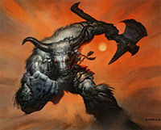

ORIGINE DELLA RAZZA
X
CENNI DI STORIA DEI MINOTAURI
X
LA SOCIETA'
DEI MINOTAURI
I minotauri vivono in una società basata su
due elementi fondamentali: la forza e l'onore. Un individuo debole non sarà mai
rispettato nella società dei minotauri ma al tempo stesso la forza, da sola, non
è un elemento sufficiente per godere di stima e buona reputazione. Occorre,
infatti, che un individuo sia onorabile. L'onorabile per i minotauri è raggiunta
attraverso la lealtà ed il coraggio. Non è, infatti, facile ottenere una
promessa da un minotauro ma quando la si ottiene è quasi certo che costui
mantenga la parola data. Quando un minotauro scopre una causa in cui crede
davvero, costui vi si dedicherà anima e corpo. Tale qualità personale ha fatto
guadagnare alla razza dei minotauri il rispetto, seppur riluttante, dei
principali gruppi legali come ad esempio dei Cavalieri della Viola pergariani.
Parimenti, un minotauro non può dimostrare codardia senza perdere la reputazione
dinanzi ai propri simili. Per tale motivo, i minotauri valutano bene le prove da
affrontare e i nemici da sfidare lottando sprezzanti del pericolo una volta che
il dado è tratto. Fin da giovani i minotauri vengono addestrati nell'arte del
combattimento e viene instillato loro un rigido codice d'onore. La società
militaresca dei minotauri e la disciplina che rispettano anche nelle relazioni
sociali e familiari conferisce loro una visione molto rigida del mondo
caratterizzata da prese di posizione acritiche e fondamentaliste.
I minotauri danno grande valore alla forza fisica disdegnando tecniche di
combattimento che si basano sull'astuzia o sui tranelli. Parimenti costoro non
apprezzano le arti magiche ritenendole modi scorretti di confrontarsi con gli
avversari. Quando, però, un utente di magia è in grado di dimostrare sul campo
di battaglia la potenza delle sue arti magiche ai minotauri costoro, non senza
restare sconcertati, matureranno un forte rispetto nei confronti della sua
persona (si badi, non delle sue arti). Ovviamente solo i maghi più potenti
possono raggiungere tale difficile risultato.
I CLAN
La struttura sociale tipica adottata dai
minotauri è il clan. I clan dei minotauri hanno comunemente una lunga storia. I
clan si formano quando un minotauro, raggiungendo l'apice della società
dimostrando enorme forza ed indistinto onore, diviene un eroe per parte del suo
popolo. I seguaci dell'eroe formano quindi un clan autonomo il cui stesso nome
trae origine dal capostipite. I membri del clan ed i suoi discendenti fanno
quindi proprio il nome dell'eroe e cercano di vivere secondo i dettami e
l'esempio lasciato dall'antenato. In questo senso ogni clan rappresenta un mondo
a sé con regole sociali che possono variare notevolmente dagli altri clan (fermo
restando le regole basilari sulla forza e l'onore universalmente riconosciute da
tutti i minotauri). Le dimensioni dei clan, inoltre, possono variare
notevolmente passando da piccoli gruppi a grandi comunità. La guida del clan è
ottenuta dimostrando la propria forza come singolo guerriero. Teoricamente
qualsiasi minotauro può sfidare il capo del clan per prendere il suo posto ed il
capo non può esimersi dall'accettarla (i tempi in cui la sfida può essere
lanciata, quelli in cui la stessa deve essere onorata e le modalità in cui deve
avvenire cambiano, però, da clan a clan). Ciò, però, avviene assai raramente in
quanto la sfida consiste in un combattimento mortale (mai del resto il perdente
avrebbe potuto vivere nel disonore) da tenersi presso l'area del clan.
I SACERDOTI E LA RELIGIONE
I minotauri possono sviluppare un forte
senso religioso divenendo in alcuni casi anche fedeli fanatici e
fondamentalisti. Nonostante le classi dei combattenti siano quelle preferite
dalla maggioranza dei minotauri e maggiormente confacenti al loro stile di vita
ed alla loro cultura, i non numerosi sacerdoti esistenti sono una classe sociale
molto rispettata e tutelata. Ogni clan, salvo quelli più piccoli, è devoto ad
una divinità e possiede un suo tempio. In una società di combattenti, i
sacerdoti rappresentano, inoltre, un'elite culturale che si occupa della
conservazione delle tradizioni culturali della comunità, ruolo senza il quale la
comunità stessa non potrebbe esistere.
Le divinità adorate dai minotauri sono le seguenti:
- Azatar
- Simbolo della rivincita delle razze umanoidi in un mondo in gran parte sotto
il controllo di umani e semi-umani Azatar è spesso venerato dai minotauri. Gli
aspetti combattivi della divinità e il suo utilizzo della forza aderiscono bene
al carattere combattivo dei minotauri. Deve considerarsi, inoltre, che
nonostante i minotauri risultino sprezzanti nei confronti delle altre razze del
Primo Piano Materiale costoro tengono in adeguata considerazione gli esseri
demoniaci ed hanno imparato a temere i loro grandi poteri. Per questo motivo i
chierici di Azatar, essendo ritenuti capaci di calmare ed addirittura utilizzare
questi esseri superiori, sono trattati con rispetto. Ovviamente, trattandosi di
una divinità delle Forze Oscure questo culto incide non poco sulla politica
interna ed esterna del clan in cui è presente. Questi clan sono, infatti, i più
pericolosi e non esitano ad incutere terrore e sofferenze sulle altre comunità
confinanti.
- Forze della Natura
- Altri clan, invece, scelgono di venerare le Forze della Natura. Questa scelta
dona al clan maggiore indipendenza ed autonomia al clan trattandosi di un culto
di tipo sciamanico non eccessivamente vincolante politicamente. In questo modo i
minotauri riescono a sentirsi parte integrante del mondo circostante. I
minotauri inoltre sono consapevoli della forza inarrestabile ed indomabile che
le Forze della Natura possono scatenare, per tale motivo rispettano i sacerdoti
che riescono a proteggerli ed a manipolare tali forze.
RELAZIONI TRA I MINOTAURI E LE ALTRE RAZZE
I minotauri credono nella superiorità della loro razza su tutte le altre e sono
convinti che il loro destino sia quello di comandarle. Come criterio generale agli occhi dei
minotauri tutte le altre razze sono deboli ed inferiori. Vi sono però notevole
differenze nel modo in cui i minotauri considerano gli appartenenti alle varie
razze. Gli elfi sono considerati creature deboli e fragili che sono costrette ad
utilizzare trucchi magici per sopravvivere alle avversità della vita e
considerazione aggravata dalle differenze culturali che sussistono tra i due
popoli. I semi-umani di taglia inferiore, come gli gnomi e gli halfling, sono
ritenute creature inutili senza coraggio e senso dell'onore. I nani sono degni
di maggiore rispetto per i loro modi spiccioli, la loro robustezza e caparbietà.
Quanto agli umani, i minotauri hanno imparato ad apprezzare la grande
versatilità di questa razza che seppure naturalmente fragile è in grado di
esprimere picchi di forza e coraggio. I minotauri, però, vivono le relazioni con
gli umani nella consapevolezza costante che solo pochi umani sono degni di tale
considerazione e, soprattutto, che anche tra questi pochi sono contraddistinti
dal senso dell'onore e della lealtà. Questa consapevolezza giustifica la
sostanziale diffidenza dei minotauri nei confronti degli umani, i quali devono
guadagnarsi di volta in volta sul campo la stima e il rispetto di questa potente
razza guerriera. Nonostante questo modo di relazionarsi alle altre razze i
minotauri consapevoli della necessita di organizzarsi militarmente sono disposti
a servirsi di truppe appartenenti alle razze inferiori purché rivestano un ruolo
di comando su quest'ultime.
ALLINEAMENTO
Cresciuti secondo un codice d'onore ed una
disciplina molto rigida, i minotauri tendono fortemente alla legalità. Allo
stesso tempo, per la discriminazione ed il disprezzo nei confronti delle altre
razze, per le abitudini bestiali e per la ferocia che sono costretti a
dimostrare in battaglia e negli stessi rapporti sociali, costoro tendono alla
malvagità. Segue una tabella per la determinazione dell'allineamento di un
minotauro comunemente inserito in tale società:
| TIRO 1d100 | ALLINEAMENTO |
| 1-4 | Legale Buono |
| 5-24 | Legale Neutrale |
| 25-79 | Legale Malvagio |
| 80-82 | Neutrale Buono |
| 83-87 | Neutrale Vero |
| 88-93 | Neutrale Malvagio |
| 94 | Caotico Buono |
| 95-96 | Caotico Neutrale |
| 97-100 | Caotico Malvagio |
EROI DEL POPOLO
DEI MINOTAURI
X

X

|
MODIFICATORE RAZZIALE ALLE ABILITÀ |
| Bonus di +2 alla Forza |
| Bonus di +1 alla Costituzione |
| MODIFICATORE BASE AI PUNTI ESPERIENZA | 20% malus + costo iniziale di 20000 punti esperienza |
|
PUNTEGGI MINIMI E MASSIMI RAZZIALI PER LE ABILITÀ |
||
| ABILITÀ | MINIMO | MASSIMO |
| Forza | 14 | 18 |
| Intelligenza | 3 | 15 |
| Saggezza | 3 | 17 |
| Costituzione | 14 | 18 |
| Carisma | 3 | 17 |
| Destrezza | 6 | 16 |
|
ACCESSO ALLE VARIE CLASSI |
|
| CLASSE | LIVELLO MASSIMO |
| COMBATTENTE - Fighter | 15° livello |
| COMBATTENTE - Enrager | 14° livello |
| COMBATTENTE - Berserker | 13° livello |
| COMBATTENTE - Adoratore del Sangue | 13° livello |
| SACERDOTE - Cleric | 12° livello |
| SACERDOTE - Blood Priest | 12° livello |
| SACERDOTE - Shaman | 10° livello |
| SACERDOTE - Negative Master | 9° livello |
|
ACCESSO ALLE CLASSI MULTIPLE |
| COMBATTENTE/SACERDOTE |
|
ACCESSO ALLE DIVINITA' |
| Azatar, Forze della Natura |
| FATTORE MOVIMENTO BASE | 8 esagoni |
| SENTIRE RUMORI | 20 % |
|
DIMENSIONI E PESO |
SISTEMA DI CALCOLO DELL'ALTEZZA E DEL PESO |
| Altezza del maschio | 163 cm. + 4 cm. per punto di costituzione + 2d20 cm. |
| Altezza della femmina | 158 cm. + 4 cm. per punto di costituzione + 2d20 cm. |
| Peso del maschio | 246 kg. + 3 kg. per punto di costituzione + 5d10 kg. |
| Peso della femmina | 240 kg. + 3 kg. per punto di costituzione + 5d10 kg. |
|
CATEGORIA DI ETÀ |
ANNI |
| Starting Age | 10 + 1d4 |
| Childhood | 0 - 10 |
| Adolescence | 11 - 15 |
| Adulthood | 15 - 41 |
| Middle Age* | 42 - 57 |
| Old Age** | 58 - 78 |
| Venerable Age*** | 79 + |
| Maximum Age | 79 +1d12 + 1d4 |
* Middle Age: I
personaggi di questa categoria di età perdono 1 punto di forza ed 1 punto di
costituzione, acquisiscono però 1 punto di intelligenza ed 1 punto di saggezza
(non potendo, in ogni caso, superare i massimi razziali).
** Old Age: I personaggi di questa categoria di età perdono 2 punti di
destrezza, 2 ulteriori punti di forza ed 1 ulteriore punto di costituzione,
acquisiscono però 1 ulteriore punto di saggezza (non potendo, in ogni caso,
superare i massimi razziali).
*** Venerable Age: I personaggi di questa categoria di età perdono 1
ulteriore punto di destrezza, di forza e di costituzione, acquisiscono però 1
ulteriore punto di intelligenza e di saggezza (non potendo, in ogni caso,
superare i massimi razziali).

| NOME | Creatura Mostruosa |
| COSTO IN PUNTI CREAZIONE | NESSUNO - ACQUISIZIONE AUTOMATICA |
| REQUISITO PARTICOLARE | NESSUNO |
| DESCRIZIONE |
Indipendentemente
dal livello raggiunto i personaggi Minotauro ottengono una serie di
caratteristiche
proprie della loro natura mostruosa. Per tale motivo
tutti i personaggi Minotauro saranno tenuti all'applicazione delle seguenti
regole: |
| NOME | Creatura di Taglia Grande |
| COSTO IN PUNTI CREAZIONE | NESSUNO - ACQUISIZIONE AUTOMATICA |
| REQUISITO PARTICOLARE | NESSUNO |
| DESCRIZIONE |
I Minotauri sono
creature di dimensioni Large. Per
tale motivo, tutti i personaggi Minotauro saranno tenuti all'applicazione
delle seguenti regole: |
| NOME | Sensi Superiori |
| COSTO IN PUNTI CREAZIONE | NESSUNO - ACQUISIZIONE AUTOMATICA |
| REQUISITO PARTICOLARE | NESSUNO |
| DESCRIZIONE |
I Minotauri sono
creature dotate di sensi superiori per tale motivo costoro ottengono i
seguenti benefici: |
| NOME | Combattere con Armi Grandi |
| COSTO IN PUNTI CREAZIONE | NESSUNO - ACQUISIZIONE AUTOMATICA |
| REQUISITO PARTICOLARE | NESSUNO |
| DESCRIZIONE |
I Minotauri sono
creature di grosse dimensioni ed estremamente forti. Per
tale motivo, tutti i personaggi Minotauro dovranno applicare le seguenti regole
in relazione all'utilizzo delle armi: |
| NOME | Tratti Bestiali |
| COSTO IN PUNTI CREAZIONE | NESSUNO - ACQUISIZIONE AUTOMATICA |
| REQUISITO PARTICOLARE | NESSUNO |
| DESCRIZIONE |
I Minotauri
sono creature
bestiali. Per tale motivo, nonostante il loro addestramento, i personaggi
Minotauro
mantengono alcuni tratti bestiali. In particolare: |
| NOME | Avversione alla Civiltà |
| COSTO IN PUNTI CREAZIONE | NESSUNO - ACQUISIZIONE AUTOMATICA |
| REQUISITO PARTICOLARE | NESSUNO |
| DESCRIZIONE |
I Minotauri
sono creature
bestiali avverse alle sofisticazioni tecnologiche e sociali proprie delle società ad alto
livello di civilizzazione. Per tale motivo i personaggi Minotauro ottengono
uno svantaggio nell'acquisizione di alcuni tipi di competenze. In particolare: |
| Carica Migliorata | |
| COSTO IN PUNTI CREAZIONE | 1 |
| REQUISITO PARTICOLARE | NESSUNO |
| DESCRIZIONE |
I
Minotauri sono
abituati ad entrare in combattimento caricando i loro avversari.
Per tale motivo coloro che possiedono questo talento razziale ottengono
il seguente beneficio:
|
| Cornata del Minotauro | |
| COSTO IN PUNTI CREAZIONE | 1 / 3 |
| REQUISITO PARTICOLARE | NESSUNO |
| DESCRIZIONE |
Se
adeguatamente allenato, il Minotauro, può imparare a combattere colpendo
il proprio avversario con le corna. Per tale motivo coloro che
possiedono questo talento
razziale ottengono i seguenti benefici: |
| Robustezza Superiore | |
| COSTO IN PUNTI CREAZIONE | 1 / 2 / 3 |
| REQUISITO PARTICOLARE | PUNTEGGIO IN COSTITUZIONE ALMENO PARI A 14 |
| DESCRIZIONE |
I
Minotauri possono sviluppare un fisico possente e vigoroso.
Per tale motivo coloro
che possiedono questo talento razziale ottengono il seguente beneficio:
|
| Forza Straordinaria | |
| COSTO IN PUNTI CREAZIONE | 2 |
| REQUISITO PARTICOLARE | PUNTEGGIO IN FORZA PARI A 18 (NON ACQUISTABILE DAI PERSONAGGI APPARTENENTI ALLE CLASSE DEI COMBATTENTI) |
| DESCRIZIONE |
I
Minotauri sono
dotati di un fisico particolarmente forte e muscoloso.
Per tale motivo coloro che possiedono questo talento razziale ottengono
il seguente beneficio:
|
| Carica di Sfondamento | |
| COSTO IN PUNTI CREAZIONE | 2 |
| REQUISITO PARTICOLARE | NESSUNO |
|
DESCRIZIONE  |
I
Minotauri, se adeguatamente addestrati, possono effettuare manovre di
carica particolarmente lesive sfruttando il peso e la struttura del
proprio possente corpo. Per tale motivo coloro
che possiedono questo talento razziale ottengono il seguente beneficio:
|
| Resistenza Superiore all'Affaticamento | |
| COSTO IN PUNTI CREAZIONE | 2 |
| REQUISITO PARTICOLARE | PUNTEGGIO IN COSTITUZIONE ALMENO PARI A 14 |
| DESCRIZIONE |
Se
adeguatamente allenato, il fisico dei Minotauri, può divenire
estremamente resistente all'affaticamento ed allo sforzo fisico. Per
tale motivo coloro che possiedono questo talento razziale ottengono i
seguenti benefici: |
| Furia di Sopravvivenza | |
| COSTO IN PUNTI CREAZIONE | 3 + 5% malus punti esperienza per chi non possiede già il talento speciale "Violenza di Combattimento" |
| REQUISITO PARTICOLARE | NESSUNO |
| DESCRIZIONE |
Le
natura feroce dei Minotauri permette loro di
entrare in un particolare stato di furia quando, durante un
combattimento, subiscono un ammontare notevole di ferite. Per tale motivo coloro
che possiedono questo talento razziale ottengono il seguente beneficio:
|